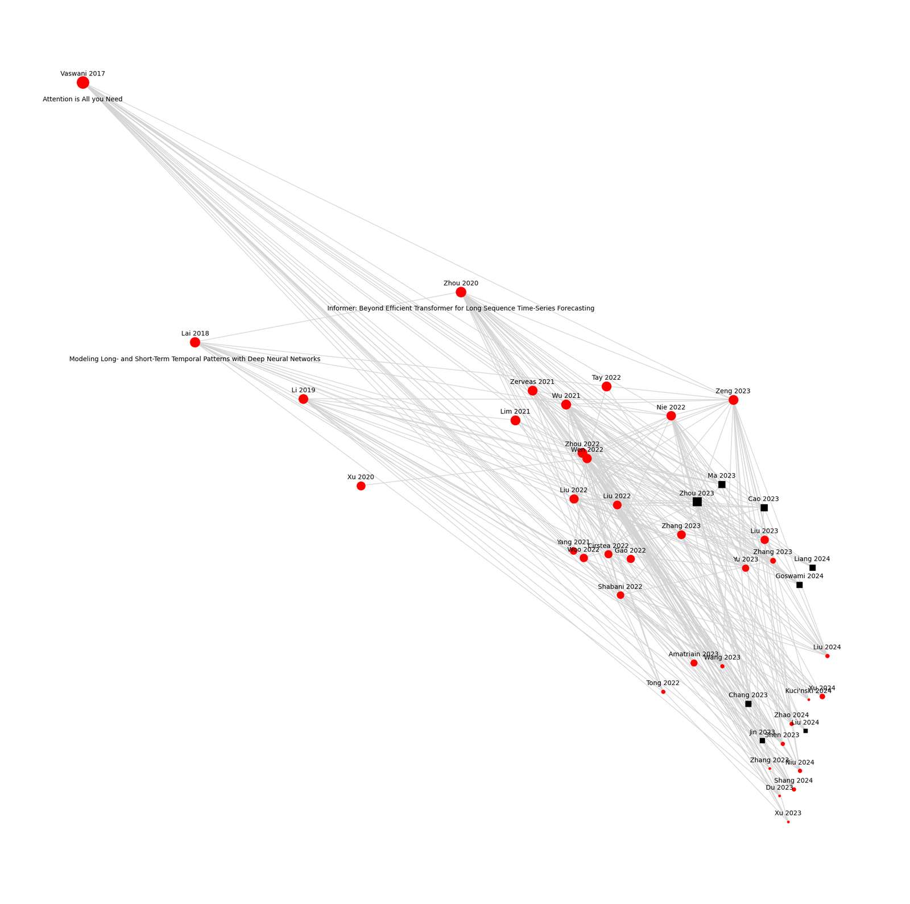
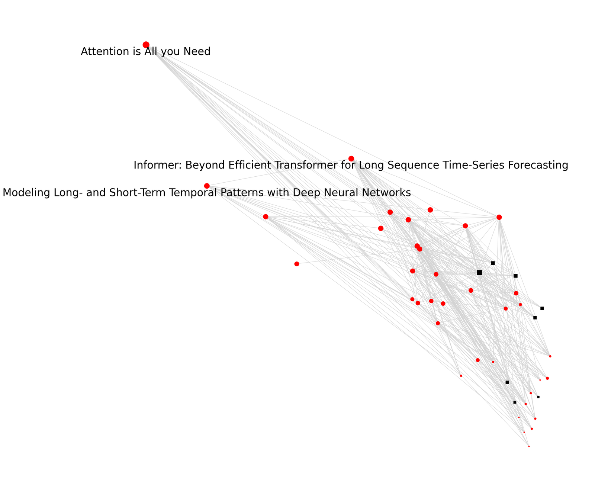

History of Transformer for Forecasting¶
This is a temporary notebook to produce figures for my book.
import datetime
import json
from pathlib import Path
import matplotlib.pyplot as plt
import networkx as nx
import numpy as np
import pandas as pd
data_path = Path("data/transformer-and-forecasting-papers.json")
with open(data_path, "r") as fp:
data = json.load(fp)
tags = (
pd.read_csv("data/transformer-and-forecasting-papers.csv")
.set_index("LitmapsId")
.Tags.to_dict()
)
# labels = {
# i["id"]: {
# "first_author_last": i.get("authorString", "").split(", ")[0].split(" ")[-1],
# "arxiv_id": i.get("arxivIds", ""),
# "year": datetime.datetime.strptime(i["publicationDate"], "%Y-%m-%dT%H:%M:%SZ").year
# }
# for i in
# data["items"]
# }
data["items"][0]
{'magIds': [2950075624, 2604847698],
'openAccessUrl': 'http://arxiv.org/pdf/1703.07015',
'forwardEdgeCount': 1155,
'arxivIds': ['1703.07015'],
'semanticScholarIds': ['5f6c1b0a780cbaae92f6169312b7441decc9d6ef'],
'abstract': 'Multivariate time series forecasting is an important machine learning problem across many domains, including predictions of solar plant energy output, electricity consumption, and traffic jam situation. Temporal data arise in these real-world applications often involves a mixture of long-term and short-term patterns, for which traditional approaches such as Autoregressive models and Gaussian Process may fail. In this paper, we proposed a novel deep learning framework, namely Long- and Short-term Time-series network (LSTNet), to address this open challenge. LSTNet uses the Convolution Neural Network (CNN) and the Recurrent Neural Network (RNN) to extract short-term local dependency patterns among variables and to discover long-term patterns for time series trends. Furthermore, we leverage traditional autoregressive model to tackle the scale insensitive problem of the neural network model. In our evaluation on real-world data with complex mixtures of repetitive patterns, LSTNet achieved significant performance improvements over that of several state-of-the-art baseline methods. All the data and experiment codes are available online.',
'createdAt': '2022-08-07T08:10:31Z',
'doctype': 'proceedings-article',
'updatedAt': '2023-04-07T04:34:50Z',
'backwardEdges': '261049465,5935507,261363334,261162486,157805404,260062840,218776176,38902622,54138891,261322489,109932487,141077332,56944353,186987285,3661079,156918705,260926259,82450983,193806104,226993850,151089196,262506487,200236775,261268342,99123768,81776371,34761083,229840453,231518444,11656072,1554017,236786244',
'title': 'Modeling Long- and Short-Term Temporal Patterns with Deep Neural Networks',
'authorString': 'Guokun Lai, Wei-Cheng Chang, Yiming Yang, Hanxiao Liu',
'forwardEdges': '221642619,6286900,80380256,262674364,252076917,239497520,261150996,254941680,265392483,253391742,265096386,106810315,230675472,207339745,252317180,263947205,142618366,266352624,79397206,262222458,93215932,182861623,228072741,110969273,262153954,125095652,109763200,261194615,244703752,255221595,231692199,203506478,235707813,182320543,262265481,265309030,251149404,262880262,270882613,268061560,95091786,154686065,234280352,60602649,274721954,175175152,119245249,21393228,2587812,267884388,252477673,261950227,249883370,24916588,265913734,17019162,247241424,254132436,253551086,235256328,242287182,254892712,258504154,194265399,250814422,209152201,252847711,231190433,253544128,167430063,254520070,180965237,19529456,32598082,67954905,228081358,110735604,33550925,246328067,5713308,9803235,241998679,252551779,77881512,12315090,53137846,52008830,266468869,271012849,272300227,254240641,42122221,36621371,237604573,112425268,252302772,266484941,258187014,71635849,257548491,107192796,220666655,244766020,206152189,250053673,241142841,265066879,274856422,237650736,74088895,272201550,273262955,261254941,252779090,261437229,251779312,254318374,251798790,193413518,264334015,270044962,209486409,201893552,270490993,23896072,125300430,122613716,84298626,108089670,239525085,123480765,248596988,3526387,58950698,274697207,251832286,262728895,266266074,274312722,265383336,252070573,270429190,253146655,255260085,230099702,261765479,24452496,255259985,125854482,220047187,253275678,264595987,264899613,107824225,252471420,232914184,244379417,261338829,274645015,241043988,271333934,86249841,42230671,91126049,260177699,270628502,263916257,255275208,91850631,143515848,261755471,275408968,275424307,263887586,265740713,252200438,266298914,235760608,103588300,257277176,260896247,39128538,9266606,273391670,235636988,145250090,994843,146472279,267434410,261795519,145682764,267525326,267255899,242754082,84993427,239507172,264974833,264303360,269470162,264115419,262297986,273538123,261978790,269848828,275011491,89210476,251160611,251622780,202508733,265613877,269750779,263201962,251481277,255751416,250630275,237728648,267778646,69522787,188561892,256257860,258899169,18369011,248288309,116692188,252736416,241038374,275361289,275196041,54883165,261340984,255439452,265861247,247443431,213827552,254931422,240286413,245749618,35478828,271443202,251644654,251473466,171133249,230214632,231828379,216258979,261980168,242837102,261836443,265388605,262675271,265959857,65819410,271960371,188464129,255233568,232739363,263855963,260874160,263470941,76568457,99933498,251439176,266362761,252459168,258955488,251697231,48084207,266961435,56242351,157234000,266235985,149448838,264978523,261334371,233401811,157618138,31203156,230822897,161651329,63373451,261949233,249724726,87992217,195701402,273979222,263823102,22476828,19277786,231008325,262371659,265235239,251626560,225831456,168325657,14556153,232194439,253144871,252465232,265212455,267886343,263323403,255078716,17104083,126648443,273929287,60402076,252611610,187433581,126446883,265223486,236764898,260497830,253369564,264203372,243716292,41775115,245243081,66039759,249666113,52018580,263595739,259236029,262925711,274277706,265964796,57627486,265719913,72796541,253844874,247706300,60906063,241772058,204896543,150555843,1789632,261179254,3561791,267633484,107814846,177389122,90524420,272112450,265635739,129369190,264832605,265793077,249954902,263160642,59387536,107465724,238937501,118125972,239619553,72701607,173521144,203311101,265575129,249718937,262982677,242427680,255616280,161512930,254180257,231784291,237734649,13660116,193793232,263318226,186166076,259857907,274221150,266191511,239331200,178021248,255416867,244372069,255107638,255230696,262337227,114559990,60405867,59135629,194486293,15704901,255497841,269747409,36147288,252197248,248141832,253794211,273423422,269682070,260779304,254559063,234332676,264540324,234919167,236418899,262352481,184142447,269609664,254130762,269225635,252881497,56370609,101743710,241097374,266441946,67983700,264733075,275253596,123804454,81111506,182947274,91428797,269211585,254662739,252182957,250052643,261084259,250573474,242915203,126676565,231920951,71555505,253560789,251777655,248283880,251394194,14934095,137880252,42573673,266482927,248479069,211014625,257932713,256110083,265024567,120073159,179543762,11347949,231349177,263199093,142540232,261868988,249822015,207749195,273627830,240661443,262977318,265318928,234497838,238764762,5101659,243304503,230478422,242346528,213413513,233689909,263143886,12490287,251508258,272778373,274543830,187111578,261954953,250574902,262215752,246250836,254193417,128175980,255070271,62177171,53695411,254171576,171594690,55577967,265907987,263061060,261498377,262185545,79995404,267825179,46159817,32918152,30314775,266567405,254011319,263553866,7920073,260973719,243612682,251097202,261641615,244875547,240202600,250011540,123521271,265201075,231773006,254427911,252641206,262967490,26067444,270832156,136926389,275438144,250751030,205157378,257155004,253173152,265681807,47757291,31360219,74997292,164635841,255264797,255193309,66632812,265582831,261654044,251909806,119619556,264813590,16087562,255763156,233339562,14224493,251954730,264979365,265458368,24824699,251378396,255037269,262021454,261781993,251473676,262250717,252536314,141779747,66473176,58600619,265386708,167779295,56511502,198637393,213373593,132550752,266333636,262744837,132818940,204973444,252808194,261088800,1193942,43720684,78873840,268184306,260774926,255539801,97096392,245233254,265014693,233016588,265445566,266579433,186859831,188063741,177905414,251016819,264294534,241003981,236004746,126947845,74558692,202723708,254487114,3787723,104764033,256417132,275477379,272689551,261756124,232023240,268751234,57011084,261041518,264763373,60181455,144338145,266551342,182988547,62239207,265968709,266577912,43745177,211630216,197299271,153675230,120707123,243573595,273987688,247331871,275295677,253725407,153169482,191888775,253723375,263365672,266424366,235400352,225997466,152047879,262238697,198552234,266357126,261989656,112101471,250638532,266133806,265472365,83288133,263898320,38897726,255883745,250089832,251392680,243596106,32524570,9978258,134736326,275329388,265503695,268913758,234000709,254427532,271692696,254833761,254193618,21527043,264874046,265232894,15275893,271923223,261994746,19675305,157718130,272792298,185655375,249272101,263848656,261057001,251351978,261480014,263822938,263836913,48611806,215476993,265318868,523776,252737620,184868594,253451539,251839056,246561320,255748671,111585364,265206373,216313283,261647409,240767488,128181995,265599601,264949622,26596432,159688352,253542174,66593623,265183299,112783115,227454800,234908898,223508723,105242686,265170794,253565669,262130554,249778931,242662433,266222232,213043614,77197275,254176086,255102665,246765648,109971251,274149418,237645496,232729923,65640920,254970998,135510400,34659873,264090950,168003899,233503231,262041504,247305660,106303313,253817740,154647613,266203381,215132465,254046922,173176925,236050855,252789766,266624237,128204893,274917569,261647514,269777418,128959747,249821301,271835220,34268767,91263777,262669844,230713698,244939290,169186426,53234892,190217030,258913634,251293801,254310811,261721761,265923415,255071524,270308802,261975618,252397892,262670852,275386127,115279283,264824911,81566448,163146662,224670538,230415865,269307479,36126463,216801127,249249015,232245643,261647513,274084193,169088779,262543639,208043700,230830737,255238844,270020836,275118747,253576948,249825208,132497081,251757970,89736250,234591351,264923958,191807908,245497390,240120085,158968181,77500312,11330721,248897530,34778175,270564625,87950297,183579980,274987557,205762618,272690244,246244640,254906531,218054861,251648565,268505112,272003803,124229410,263558711,251585077,255256595,261314282,103918353,254734831,133695824,265613944,272379479,231034328,199738730,267506854,263885751,268440525,230567670,2796538,249074601,1930634,255600756,170925467,261072186,274140016,238013596,273839424,275472081,217448095,251143609,260910409,87845742,42270254,137691725,272052438,253121626,250064327,8424213,69566710,204809087,266405556,255749185,271222403,132669872,262882086,62275312,173384999,249455870,251090072,244490041,251691365,261185298,227694634,266857982,127371193,253467953,168678780,270110295,255298418,249062707,257586376,267358679,255179833,265438331,104528272,17145820,179627892,154013406,275336236,248627991,270570110,149296187,237918942,62748911,26224584,255586689,265133556,264653626,272837082,265869906,252039880,266022359,263276446,72103548,233484588,252819553,265425214,263296701,265555932,178600651,269841098,255600960,189527501,265437297,265889418,255298317,253541266,4000773,142275761,244065818,235668288,41000170,250567248,262343642,255724133,268181655,251790361,175042108,261888365,256748570,265818672,191497623,254557512,255215541,139938530,250881218,271110639,274065154,269158168,269072524,160852144,39479851,255174921,252395421,259407284,269137803,253739073,99299541,212336312,117263822,248568063,211488550,274694140,263526284,273862485,265980448,99442779,268080340,255214457,246864439,252458106,236743576,131584116,8199357,248551344,139604581,269536337,265092884,240857766,88343517,187988864,44356795,84259012,116959493,273986426,90207875,261709422,232299255,265069454,250424445,240361042,248895605,25983185,249828043,38536087,265562928,255206662,240543570,273005077,144464847,253810441,259658908,176191006,261713495,258238193,254887135,196054983,254236794,232072660,265084577,253197901,253822524,263122476,251654028,224829998,231910215,265453713,107621714,250495954,254319082,243663991,225399199,25784830,245104393,251061016,2122047,273976514,247120261,259898699,265416458,235966976,267079518,248068484,243810584,165243890,30523140,254576912,260704155,240556526,275294017,118071564,275359206,103982468,96756871,47423297,59138429,251908240,238324461,252172195,265007575,251414185,37140476,72017013,275428783,255583029,265967279,245354934,183302998,249353308,261426024,255288146,108793908,250861702,192159622,186997315,251957618,251304293,271984942,240771011,250818048,94128815,232868569,255241792,255222751,172167480,261974392,253219765,178373821,255641656,152236990,266947244,9309766,191432817,230635040,246736146,181224946,56649553,107963401,38164872,253544854,254176881,101749896,268273325,255659011,262971110,172138793,95022518,264795847,165841545,261546724,248376678,269965939,236300029,234559116,274960479,249713138,132217931,256651175,269218623,228057580,221696167,82551623,265476213,115223533,230331157,18082250,48071248,30350873,7083063,263437817,252019219,263181603,263864613,231754113,118177857,236800941,33429054,252788419,253437505,253257324,273809106,255277094,58442612,133878487,255280094,261188362,221466276,270173407,124304669,132446472,233471446,191873621,254287052,261861530,254289209,262579020,268526213,264489351,252878723,159618840,274912635,231104324,254032046,265464344,71528212,247529798,26370465,264873333,194225784,261730877,271049614,104323748,211546170,108408072,251914127,249726384,265265668,270347363,109658732,254439164,53916720,260433482,254900459,252464743,34482798,267242190,255755188,237526496,85580415,263155915,255748742,264024834,237979781,264428906,264557954,227076626,257674958,265414278,70502772,239412092,46993775,205287681,250936845,33185724,10294002,249534665',
'dois': ['10.1145/3209978.3210006'],
'url': 'https://doi.org/10.1145/3209978.3210006',
'backwardEdgeCount': 32,
'id': 123919995,
'publicationDate': '2018-06-27T00:00:00Z',
'openAlexIds': ['W2604847698'],
'semanticScholarCorpusIds': [4922476, 4922476]}
min_date = min(
[
datetime.datetime.strptime(
i["publicationDate"], "%Y-%m-%dT%H:%M:%SZ"
).toordinal()
for i in data["items"]
]
)
rng = np.random.default_rng(42)
coordinate_calculator = lambda i: np.array(
[
np.log(
datetime.datetime.strptime(
i["publicationDate"], "%Y-%m-%dT%H:%M:%SZ"
).toordinal()
),
(
np.log(1 + i.get("forwardEdgeCount", 0)) * (1 + rng.random() * 0.2)
if i.get("forwardEdgeCount", 0) > 50
else np.log(1 + i.get("forwardEdgeCount", 0)) + rng.random() * 3
),
]
)
coordinates = {i["id"]: coordinate_calculator(i) for i in data["items"]}
color_calculator = lambda i: "black" if "Foundation Model" in tags[i["id"]] else "red"
marker_calculator = lambda i: "s" if "Foundation Model" in tags[i["id"]] else "o"
node_size_calculator = lambda x: 10 + 30 * np.log(1 + x)
G = nx.Graph()
for i in data["items"]:
G.add_node(
i["id"],
forwardEdgeCount=i.get("forwardEdgeCount", 0),
coordinate=coordinates[i["id"]],
color=color_calculator(i),
marker=marker_calculator(i),
size=node_size_calculator(i.get("forwardEdgeCount", 0)),
first_author_last=i.get("authorString", "").split(", ")[0].split(" ")[-1],
arxiv_id=i.get("arxivIds", ""),
year=datetime.datetime.strptime(
i["publicationDate"], "%Y-%m-%dT%H:%M:%SZ"
).year,
title=i["title"],
)
for b in i.get("backwardEdges", "").split(","):
try:
if int(b) in data["ids"]:
G.add_edge(i["id"], int(b))
except ValueError as e:
print(f"{b}: {e}")
: invalid literal for int() with base 10: ''
transformer_origin_id = 261105339
# title_labels = {
# i["id"]: i["title"]
# for i in
# data["items"]
# if i.get("forwardEdgeCount",0) >= 1000
# }
fig, ax = plt.subplots(figsize=(25, 25))
node_size_calculator = lambda x: 10 + 30 * np.log(1 + x)
nx.draw_networkx_edges(G, coordinates, edge_color="lightgray")
# Draw the nodes with different markers
effective_nodes = []
for node in G.nodes:
try:
nx.draw_networkx_nodes(
G,
pos=coordinates,
nodelist=[node],
node_size=G.nodes.get(node).get("size"),
node_shape=G.nodes.get(node).get("marker"),
node_color=G.nodes.get(node).get("color"),
)
effective_nodes.append(node)
except IndexError as e:
print(f"{node}: {e}")
for node in effective_nodes:
x, y = G.nodes.get(node).get("coordinate")
first_author_last = G.nodes.get(node).get("first_author_last")
year = G.nodes.get(node).get("year")
plt.text(x, y + 0.1, f"{first_author_last} {year}", horizontalalignment="center")
for node in effective_nodes:
node_citations = G.nodes.get(node).get("forwardEdgeCount")
if node_citations >= 1000:
node_title = G.nodes.get(node).get("title")
plt.text(
coordinates[node][0],
coordinates[node][1] - 0.3,
node_title,
horizontalalignment="center",
)
plt.axis("off")
fig.savefig(
"results/transformer_history/transformer_ts_papers.png",
bbox_inches="tight",
pad_inches=-0.5,
# transparent=True
)

We need a version that is easier to read on print outs
fig, ax = plt.subplots(figsize=(25, 25))
node_size_calculator = lambda x: 10 + 30 * np.log(1 + x)
nx.draw_networkx_edges(G, coordinates, edge_color="lightgray")
# Draw the nodes with different markers
effective_nodes = []
for node in G.nodes:
try:
nx.draw_networkx_nodes(
G,
pos=coordinates,
nodelist=[node],
node_size=G.nodes.get(node).get("size"),
node_shape=G.nodes.get(node).get("marker"),
node_color=G.nodes.get(node).get("color"),
)
effective_nodes.append(node)
except IndexError as e:
print(f"{node}: {e}")
for node in effective_nodes:
x, y = G.nodes.get(node).get("coordinate")
first_author_last = G.nodes.get(node).get("first_author_last")
year = G.nodes.get(node).get("year")
# plt.text(x, y + 0.1, f"{first_author_last} {year}", horizontalalignment="center")
for node in effective_nodes:
node_citations = G.nodes.get(node).get("forwardEdgeCount")
if node_citations >= 1000:
node_title = G.nodes.get(node).get("title")
plt.text(
coordinates[node][0],
coordinates[node][1] - 0.3,
node_title,
horizontalalignment="center",
fontdict={"size": 30},
)
plt.axis("off")
fig.savefig(
"results/transformer_history/transformer_ts_papers_no_labels.png",
bbox_inches="tight",
pad_inches=-0.5,
# transparent=True
)

Table¶
df = pd.DataFrame(data["items"]).rename(
columns={
"forwardEdgeCount": "citations",
"authorString": "authors",
}
)
df["year"] = df.publicationDate.apply(
lambda x: datetime.datetime.strptime(x, "%Y-%m-%dT%H:%M:%SZ").year
)
df.fillna({"citations": 0}, inplace=True)
df = df.astype(dtype={"citations": int})[["title", "authors", "citations", "year"]]
df.sort_values(by="year", inplace=True)
print(df.to_markdown())
Output (47 lines)
| | title | authors | citations | year |
|---:|:------------------------------------------------------------------------------------------------------------------------|:---------------------------------------------------------------------------------------------------------------------------------------------|------------:|-------:|
| 19 | Attention is All you Need | Ashish Vaswani, Noam Shazeer, Niki Parmar, Jakob Uszkoreit, Llion Jones, Aidan N. Gomez, Lukasz Kaiser, Illia Polosukhin | 52657 | 2017 |
| 0 | Modeling Long- and Short-Term Temporal Patterns with Deep Neural Networks | Guokun Lai, Wei-Cheng Chang, Yiming Yang, Hanxiao Liu | 1155 | 2018 |
| 18 | Enhancing the Locality and Breaking the Memory Bottleneck of Transformer on Time Series Forecasting. | Shiyang Li, Xiaoyong Jin, Yao Xuan, Xiyou Zhou, Wenhu Chen, Yu-Xiang Wang, Xifeng Yan | 501 | 2019 |
| 5 | Informer: Beyond Efficient Transformer for Long Sequence Time-Series Forecasting | Haoyi Zhou, Shanghang Zhang, J. Peng, Shuai Zhang, Jianxin Li, Hui Xiong, Wan Zhang | 1769 | 2020 |
| 6 | Spatial-Temporal Transformer Networks for Traffic Flow Forecasting | Mingxing Xu, Wenrui Dai, Chunmiao Liu, Xing Gao, Weiyao Lin, Guo-Jun Qi, Hongkai Xiong | 163 | 2020 |
| 1 | Autoformer: Decomposition Transformers with Auto-Correlation for Long-Term Series Forecasting | Haixu Wu, Jiehui Xu, Jianmin Wang, Mingsheng Long | 721 | 2021 |
| 2 | A Transformer-based Framework for Multivariate Time Series Representation Learning | George Zerveas, Srideepika Jayaraman, Dhaval Patel, Anuradha Bhamidipaty, Carsten Eickhoff | 542 | 2021 |
| 21 | Temporal Fusion Transformers for interpretable multi-horizon time series forecasting | Bryan Lim, Sercan O. Arik, Nicolas Loeff, Tomas Pfister | 634 | 2021 |
| 9 | Transformer Embeddings of Irregularly Spaced Events and Their Participants | Chenghao Yang, Hongyuan Mei, Jason Eisner | 32 | 2021 |
| 20 | Efficient Transformers: A Survey | Yi Tay, Mostafa Dehghani, Dara Bahri, Donald Metzler | 641 | 2022 |
| 16 | Earthformer: Exploring Space-Time Transformers for Earth System Forecasting | Zhihan Gao, Xingjian Shi, Hao Wang, Yi Zhu, Yuyang Wang, Mu Li, Dit-Yan Yeung | 69 | 2022 |
| 15 | Scaleformer: Iterative Multi-scale Refining Transformers for Time Series Forecasting | Amin Shabani, Amir Abdi, Li Meng, Tristan Sylvain | 31 | 2022 |
| 14 | Transformers in Time Series: A Survey | Qingsong Wen, Tian Zhou, Chao Zhang, Weiqiu Chen, Ziqing Ma, Junchi Yan, Liang Sun | 327 | 2022 |
| 13 | Non-stationary Transformers: Exploring the Stationarity in Time Series Forecasting | Yong Liu, Haixu Wu, Jianmin Wang, Mingsheng Long | 119 | 2022 |
| 12 | Probabilistic Decomposition Transformer for Time Series Forecasting | Junlong Tong, Liping Xie, Wankou Yang, Kanjian Zhang | 1 | 2022 |
| 11 | A Time Series is Worth 64 Words: Long-term Forecasting with Transformers | Yuqi Nie, Nam H. Nguyen, Phanwadee Sinthong, J. Kalagnanam | 360 | 2022 |
| 10 | ETSformer: Exponential Smoothing Transformers for Time-series Forecasting | Gerald Woo, Chenghao Liu, Doyen Sahoo, Akshat Kumar, S. Hoi | 81 | 2022 |
| 8 | Pyraformer: Low-Complexity Pyramidal Attention for Long-Range Time Series Modeling and Forecasting | Shizhan Liu, Hang Yu, Cong Liao, Jianguo Li, Weiyao Lin, Alex X. Liu, S. Dustdar | 251 | 2022 |
| 7 | Triformer: Triangular, Variable-Specific Attentions for Long Sequence Multivariate Time Series Forecasting-Full Version | Razvan-Gabriel Cirstea, Chenjuan Guo, B. Yang, Tung Kieu, Xuanyi Dong, Shirui Pan | 62 | 2022 |
| 4 | FEDformer: Frequency Enhanced Decomposed Transformer for Long-term Series Forecasting | Tian Zhou, Ziqing Ma, Qingsong Wen, Xue Wang, Liang Sun, Rong Jin | 533 | 2022 |
| 34 | Causalformer: Causal Discovery-based Transformer for Multivariate Time Series Forecasting | Chonghao Zhang, Linlin Zhao, Zhefeng Yin, Zhenguo Zhang | 0 | 2023 |
| 35 | Transformer Multivariate Forecasting: Less is More? | Jingjing Xu, Caesar Wu, Yuan-Fang Li, Pascal Bouvry | 0 | 2023 |
| 33 | Take an Irregular Route: Enhance the Decoder of Time-Series Forecasting Transformer | Li Shen, Yuning Wei, Yangzhu Wang, Huaxin Qiu | 1 | 2023 |
| 32 | MultiResFormer: Transformer with Adaptive Multi-Resolution Modeling for General Time Series Forecasting | Linfeng Du, Ji Xin, Alex Labach, S. Zuberi, M. Volkovs, Rahul G. Krishnan | 0 | 2023 |
| 31 | Multi-resolution Time-Series Transformer for Long-term Forecasting | Yitian Zhang, Liheng Ma, Soumyasundar Pal, Yingxue Zhang, Mark Coates | 5 | 2023 |
| 30 | TEMPO: Prompt-based Generative Pre-trained Transformer for Time Series Forecasting | Defu Cao, Furong Jia, Sercan Ö. Arik, Tomas Pfister, Yixiang Zheng, Wen Ye, Yan Liu | 26 | 2023 |
| 29 | iTransformer: Inverted Transformers Are Effective for Time Series Forecasting | Yong Liu, Tengge Hu, Haoran Zhang, Haixu Wu, Shiyu Wang, Lintao Ma, Mingsheng Long | 82 | 2023 |
| 28 | Time-LLM: Time Series Forecasting by Reprogramming Large Language Models | Ming Jin, Shiyu Wang, Lintao Ma, Zhixuan Chu, James Y. Zhang, X. Shi, Pin-Yu Chen, Yuxuan Liang, Yuan-Fang Li, Shirui Pan, Qingsong Wen | 3 | 2023 |
| 22 | One Fits All:Power General Time Series Analysis by Pretrained LM | Tian Zhou, Peisong Niu, Xue Wang, Liang Sun, Rong Jin | 110 | 2023 |
| 26 | DSformer: A Double Sampling Transformer for Multivariate Time Series Long-term Prediction | Chengqing Yu, Fei Wang, Zezhi Shao, Tao Sun, Lin Wu, Yongjun Xu | 23 | 2023 |
| 25 | Crossformer: Transformer Utilizing Cross-Dimension Dependency for Multivariate Time Series Forecasting | Yunhao Zhang, Junchi Yan | 135 | 2023 |
| 24 | Make Transformer Great Again for Time Series Forecasting: Channel Aligned Robust Dual Transformer | Xue Wang, Tian Zhou, Qingsong Wen, Jinyang Gao, Bolin Ding, Rong Jin | 1 | 2023 |
| 23 | A Survey on Time-Series Pre-Trained Models | Qianli Ma, Z. Liu, Zhenjing Zheng, Ziyang Huang, Siying Zhu, Zhongzhong Yu, J. Kwok | 24 | 2023 |
| 17 | Transformer models: an introduction and catalog | X. Amatriain | 17 | 2023 |
| 3 | Are Transformers Effective for Time Series Forecasting? | Ailing Zeng, Muxi Chen, Lei Zhang, Qiang Xu | 570 | 2023 |
| 27 | LLM4TS: Two-Stage Fine-Tuning for Time-Series Forecasting with Pre-Trained LLMs | Ching Chang, Wenjie Peng, Tien-Fu Chen | 9 | 2023 |
| 43 | Integrating Mamba and Transformer for Long-Short Range Time Series Forecasting | Xiongxiao Xu, Yueqing Liang, Baixiang Huang, Zhiling Lan, Kai Shu | 4 | 2024 |
| 36 | MSHyper: Multi-Scale Hypergraph Transformer for Long-Range Time Series Forecasting | Zongjiang Shang, Ling Chen | 1 | 2024 |
| 37 | HiMTM: Hierarchical Multi-Scale Masked Time Series Modeling for Long-Term Forecasting | Shubao Zhao, Ming Jin, Zhaoxiang Hou, Che-Sheng Yang, Zengxiang Li, Qingsong Wen, Yi Wang | 1 | 2024 |
| 38 | Attention as Robust Representation for Time Series Forecasting | Peisong Niu, Tian Zhou, Xue Wang, Liang Sun, Rong Jin | 1 | 2024 |
| 39 | MOMENT: A Family of Open Time-series Foundation Models | Mononito Goswami, Konrad Szafer, Arjun Choudhry, Yifu Cai, Shuo Li, Artur Dubrawski | 9 | 2024 |
| 40 | Generative Pretrained Hierarchical Transformer for Time Series Forecasting | Zhiding Liu, Jiqian Yang, Mingyue Cheng, Yucong Luo, Zhi Li | 1 | 2024 |
| 41 | tsGT: Stochastic Time Series Modeling With Transformer | Lukasz Kuci'nski, Witold Drzewakowski, Mateusz Olko, Piotr Kozakowski, Lukasz Maziarka, Marta Emilia Nowakowska, Lukasz Kaiser, Piotr Milo's | 0 | 2024 |
| 42 | Foundation Models for Time Series Analysis: A Tutorial and Survey | Yuxuan Liang, Haomin Wen, Yuqi Nie, Yushan Jiang, Ming Jin, Dongjin Song, Shirui Pan, Qingsong Wen | 11 | 2024 |
| 44 | Deep Time Series Forecasting Models: A Comprehensive Survey | Xinhe Liu, Wenmin Wang | 1 | 2024 |